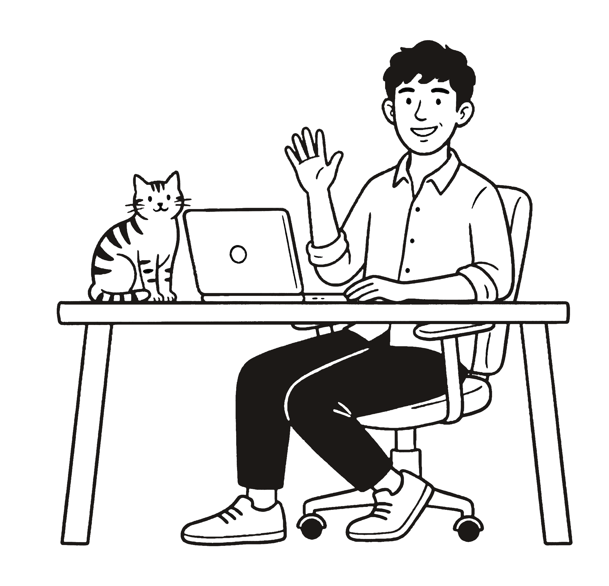

Private Tutoring
Over 1,000 hours of one-on-one tutoring experience across primary, secondary, and VCE levels. I specialise in VCE English and Literature, with original study resources available for .
Learn with meMelbourne, Australia
Final-year student doctor passionate about travel, technology, and photography.
Scroll
About me
I’m a student doctor, born and raised in Melbourne, with a love of teaching, debating, cooking, and good design. I appreciate the small details that make something special, like a well-crafted sentence in a good book, a uniquely designed interface, or the way the light fades at the end of a long day.
Outside the hospital, you’ll find me trying new recipes, chasing golden hour, or playing with my cats. I’m drawn to new experiences that expand my perspectives, whether it be hiking to remote campsites or trying aerial yoga classes.
Photography
What I offer
Over 1,000 hours of one-on-one tutoring experience across primary, secondary, and VCE levels. I specialise in VCE English and Literature, with original study resources available for .
Learn with meThree-time DAV State Champion and accredited adjudicator with eight years of competitive experience. I’ve coached individual students and delivered seminars to groups of over 100 debaters.
Get in touchI also take on freelance web design projects. I’ve built websites for an independent film studio and a technology start-up, so please reach out if you’re in search of a new website.
Background
2022 – Present
Monash University
Ongoing
Melbourne Grammar School
Ongoing
Self-employed
2022 – 2024
Colmed Group
2021
Melbourne Grammar School
Whether you’re a student or parent interested in tutoring or coaching, want to chat cameras, or just have something on your mind — I’d love to hear from you.
hello@albertdu.com